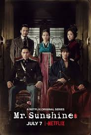

 | Mr. Sunshine menceritakan kisah seorang anak dari keluarga budak bernama Eugine Choi (Lee Byung Hun).Melihat kedua orang tuanya dibunuh di depan mata, Eugine kabur ke Amerika dan membawa dendam.Kembali dari Amerika, Eugine bertugas di Korea sebagai tentara dan bertemu dengan Go Ae Shin (Kim Tae Ri) yang berasal dari keluarga terpandang di Joseon. Mengetahui rahasia Ae Shin sebagai seorang pasukan rahasia, Eugine berteman baik hingga jatuh cinta padanya.
Sementara itu, Kim Hae Sung (Byun Yo Han), tunangan Ae Shin yang tinggal di Jepang, dan Goo Dong Mae (Yoo Yeon Seok), seorang ahli samurai di Joseon, juga mencintai Ae Shin.
Informasi bahwa Ae Shin adalah seorang pasukan rahasia untuk perlawanan terhadap Jepang membuat Hina Kudo (Kim Min Jung) berjuang bersamanya. Ae Shin menghadapi berbagai rintangan demi membebaskan Korea dari tangan Jepang. Eugine, Kim Hae Sung, dan Dong Mae pun turut berjuang dan menjadi tameng pelindung Ae Shin.(sumber:kompas.com)
|